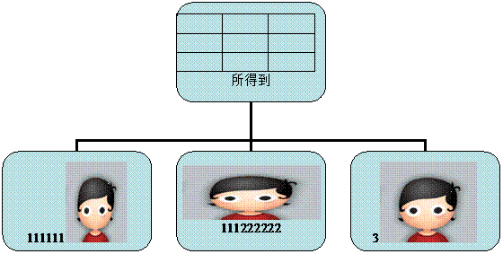
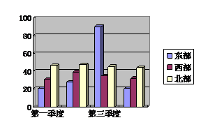

为什么我在百度文库下载了一篇文档，下完打开来却出现“word无法启动转换器mswrd
最佳答案
默认情况下，Windows
XP SP2、Windows XP SP3、Windows
Server 2003 SP1 和 Windows Server 2003 SP2 操作系统已通过禁用这些文本转换器阻止写字板分析 Word 6.0 和 Write 文档。

如果管理员需要 WordPad-to-Word 6.0 和 WordPad-to-Write 转换器，则可以通过添加一个 AllowConversion 注册表项并使 DWORD 值为 1 重新启用该转换器。若要执行该操作，请遵循以下步骤：
依次单击「开始」、“运行”，键入 regedit，然后单击“确定”。
找到并单击下面的注册表子项：
|
|
|
|
|
|
|
|
|
|
|
|
|
|
|
|
|
|
|
|
|
|
|
|
|
|
|
|
|
|
|
|
|
对于 32 位版本的 Windows
HKEY_LOCAL_MACHINE\Software\Microsoft\Windows\CurrentVersion\Applets\Wordpad
对于 Windows 64 (WOW) 模式的 Microsoft Windows
HKEY_LOCAL_MACHINE\Software\Wow6432Node\microsoft\Windows\CurrentVersion\Applets\Wordpad
在“编辑”菜单上，指向“新建”，然后单击“DWORD 值”。
键入 AllowConversion 作为 DWORD 的名称，然后按 Enter。
右键单击 AllowConversion，然后单击“修改”。
在“数值”框中，键入 1，然后单击“确定”。
退出注册表编辑器。
设置此注册表项值之后，任何应用程序都可以加载 WordPad-to-Word 6.0 和 WordPad-to-Windows
Write 转换器。还可以通过将此注册表项值设置为 0 来禁用这些转换器。
打开WORD文档时提示“word无法启动转换器mswrd632 wpc”的解决方法
打开WORD文档时提示“word无法启动转换器mswrd632 wpc”的解决方法
因为之前安装的是精简版的office 2003，导致系统找不到这个文件，出现标题上的问题“Word无法启动转换器mswrd632 wpc”，点击确定后虽然可以关闭，但每次打开word
都会再出现，特烦人，网站说可以安装完整版的系统，自己又不想重新下载，于是秉承DIY精神，自己动手解决。
那么，启动word后出现“word无法启动转换器mswrd632 wpc”该如何解决呢？
方法一：一直点“word无法启动转换器mswrd632 wpc”下面的确定，它会出现文本内容，然后选另存为，再打开就正常了。
方法二：点击开始，点击运行regedit，然后点击OK，定位到
HKEY_LOCAL_MACHINE\SOFTWARE\Microsoft\Shared Tools\Text
Converters\Import\MSWord6.wpc，单击右键，在编辑菜单点击“删除
Word 文档是许多电脑用户写作时使用的文件格式，当您辛辛苦苦写完一篇Word文档后，发现它因损坏而无法打开时，一定非常着急。其实，您不必心焦，因为我们还是有一些方法可以修复损坏文档，恢复受损文档中的文字。下面是具体的步骤。
1 采用专用修复功能
①在“文件”菜单上，单击“打开”。
②在“查找范围”列表中，单击包含要打开的文件的驱动器、文件夹或Internet
位置。
③在文件夹列表中，定位并打开包含文件的文件夹。
④选择要恢复的文件。
⑤单击“打开”按钮旁边的箭头，然后单击“打开并修复”（如图）。
“打开并修复”是Word 2002/2003 才具有的功能，如果该方法仍不能打开受损文档，或者您使用的是Word 97/2000，可以试试以下方法。
2 提取文字法
①在“工具”菜单上，单击“选项”*“常规”选项卡。
②确认选中“打开时确认转换”复选框，然后单击“确定”。
③单击常用工具栏上的“打开”按钮。
④在“文件类型”框中，单击“从任意文件中恢复文本”。
⑤像通常一样打开文档。
在使用上述方法打开受损Word 文档后，如果文档内容显示混乱，请继续以下工作。
3 转换文档格式
将Word文档转换为另一种格式，然后再将其转换回Word 文档格式。这是最简单和最彻底的文档恢复方法，请始终先尝试这种方法。
①在Word 中打开损坏的文档。
②在“文件”菜单上，单击“另存为”。
③在“保存类型”列表中，单击“RTF 格式(*.rtf)”，然后单击“保存”
4 粘贴为新文档
Word 用文档中的最后一个段落标记关联各种格式设置信息，特别是节与样式的格式设置。如果将最后一个段落标记之外的所有内容复制到新文档，就有可能将损坏的内容留在原始文档中。在新文档中，重新应用所有丢失的节或样式的格式设置。选定最后一个段落标记之外的所有内容的方法是：在“工具”菜单上，单击“选项”*“编辑”，清除“使用智能段落选择范围”复选框，单击“确定”按钮，然后按“Ctrl+End”组合键，再按“Ctrl+Shift+Home”组合键。
5 重命名模板
Word在Normal.dot模板文件中存储默认信息。如果该文件被损坏，则Word文档中也许会出现奇怪的内容。
①关闭Word。
②单击“开始”*“搜索”*“所有文件和文件夹”。
③在“全部或部分文件夹名”框中，键入“normal.dot”。
④在“在这里寻找”列表中，单击安装Word 的硬盘盘符，然后单击“搜索”。
⑤右键单击结果列表中的“Normal”或“Normal.dot”，然后单击“重命名”（如图）。
⑥为该文件键入新的名称，例如“Normal.old”，然后按回车键。
之后，启动Word，由于Word 无法识别重命名的Normal 文件，Word将创建一个新的Normal 模板。创建新的Normal模板后，请尝试打开您的文档。如果可以正确打开，则旧的Normal模板可能已损坏。如果您的文档还用到了Normal.dot 之外的其他模板，该模板也可能已损坏。请尝试重新创建模板或使用它的较早版本。